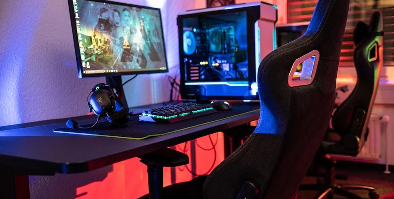

Welcome to ProGamer Hub!
Welcome to ProGamer Hub, your go-to destination for
everything gaming! Whether you're a casual player or a
competitive esports enthusiast, we've got content for you.
Here at ProGamer Hub, we're passionate about games of all kinds—from
action-packed shooters to relaxing puzzle games, from massive open-world
RPGs to quick mobile games you can play on the bus. Gaming is
for everyone, and we're here to help you get the most out of
your gaming experience!
Our site features honest game reviews, helpful tips and strategies,
and a vibrant community of gamers who love to share their experiences.
We believe that gaming isn't just about winning—it's about having fun,
making friends, and enjoying the incredible worlds
that game developers create for us.
Featured Game of the Month
Minecraft: The Ultimate Sandbox Experience

This month, we're featuring Minecraft—the game
that needs no introduction! Whether you're building incredible
structures in Creative mode or surviving the night in Hardcore,
Minecraft offers endless possibilities.
What makes Minecraft special? It's the ultimate creative
outlet combined with survival gameplay. You can build
anything you can imagine—from simple houses to entire cities,
from working calculators to roller coasters. The only limit is
your creativity!
Why We Love It:
- Creative Freedom - Build anything you can imagine
- Multiplayer Fun - Play with friends on servers
- Regular Updates - New content added frequently
- Mod Support - Thousands of mods to enhance gameplay
- Cross-Platform - Play on PC, console, or mobile
Check out our detailed review and
beginner's guide to get started!
What's New on ProGamer Hub
We're constantly updating our site with fresh content! Here's what's
been added recently:
-
New Review: Complete analysis of the latest
action-adventure game
-
Tips Guide: Master redstone circuits in Minecraft
-
Community Event: Join our weekend gaming tournament
-
Gear Guide: Best gaming headsets under $50
-
Interview: Chat with a professional esports player
ProGamer Hub Stats
Check out how our community has grown! We're proud to have such an
amazing group of gamers visiting our site.
| Metric |
Count |
Growth |
| Total Visitors |
15,234 |
+23% this month |
| Game Reviews |
42 |
3 new this week |
| Community Members |
1,891 |
+156 this week |
| Tips & Guides |
87 |
5 new this month |
Platforms We Cover
We provide content for all major gaming platforms,
so no matter how you play, we've got you covered!
PC Gaming

From high-end graphics to modding communities, PC gaming offers
unmatched flexibility and performance.
Console Gaming

PlayStation, Xbox, and Nintendo Switch—we cover all the latest
console exclusives and multi-platform releases.
Mobile Gaming

Gaming on the go! We review mobile games and share tips for
getting the most out of your phone or tablet.
Useful Gaming Resources
Looking for more gaming content? Check out these awesome external
resources we recommend:
-
IGN
- Game reviews, news, and guides
-
Polygon
- Gaming culture and entertainment
-
PC Gamer
- Everything PC gaming
-
Twitch
- Watch live game streams
-
YouTube Gaming
- Gaming videos and Let's Plays